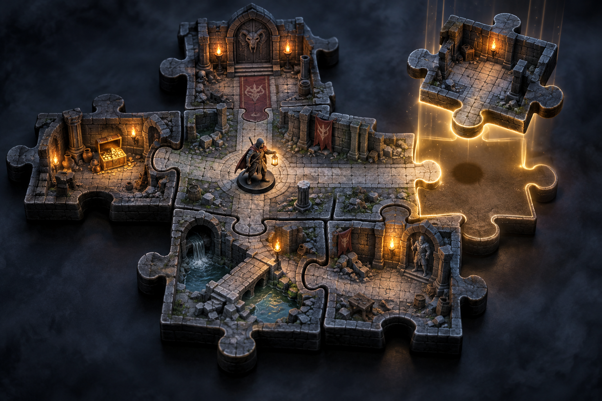
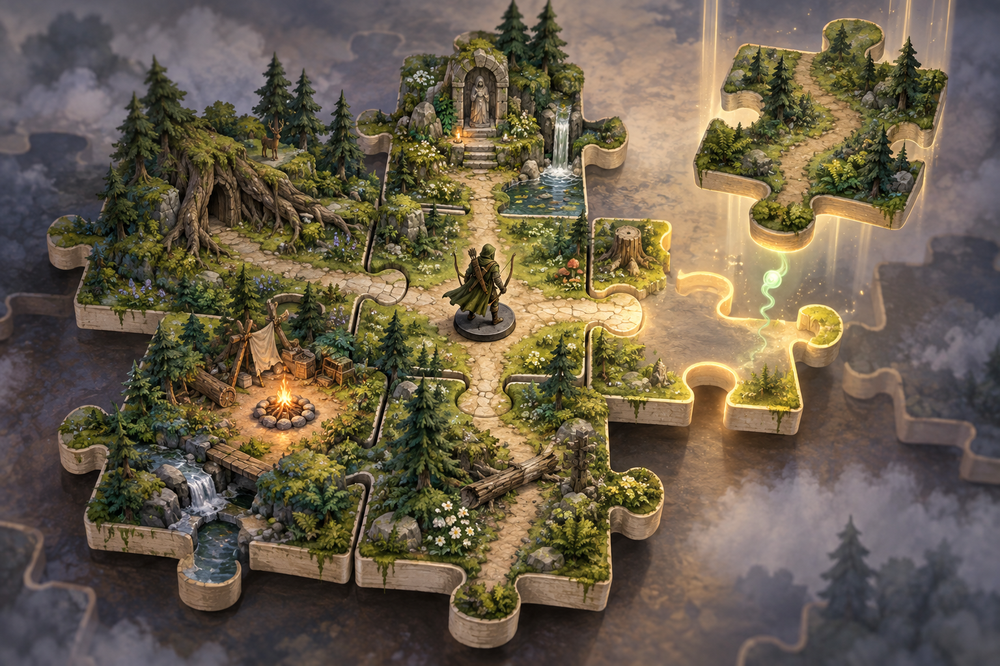
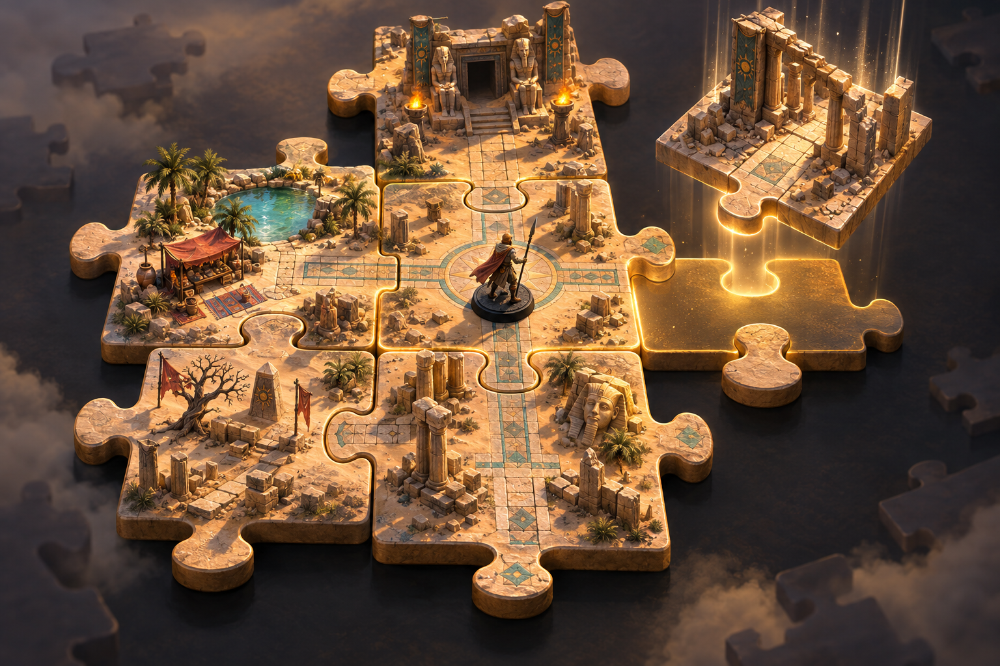
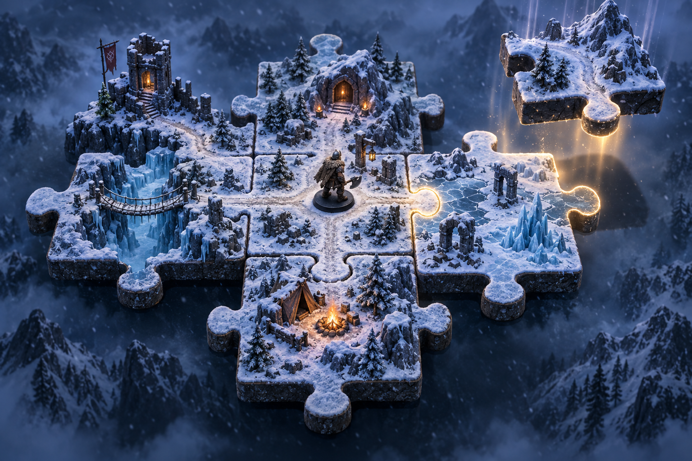
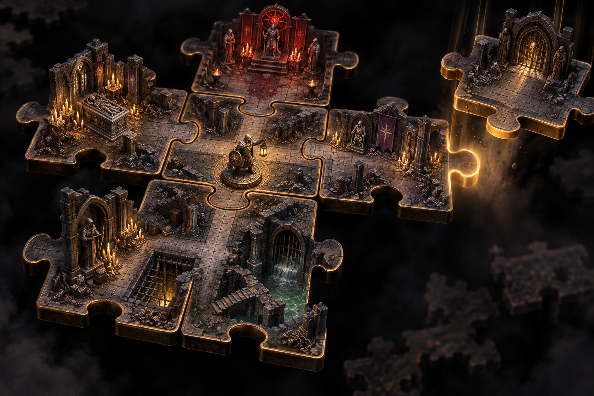
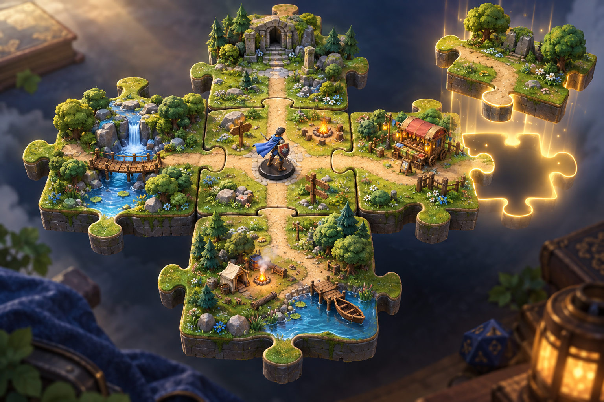
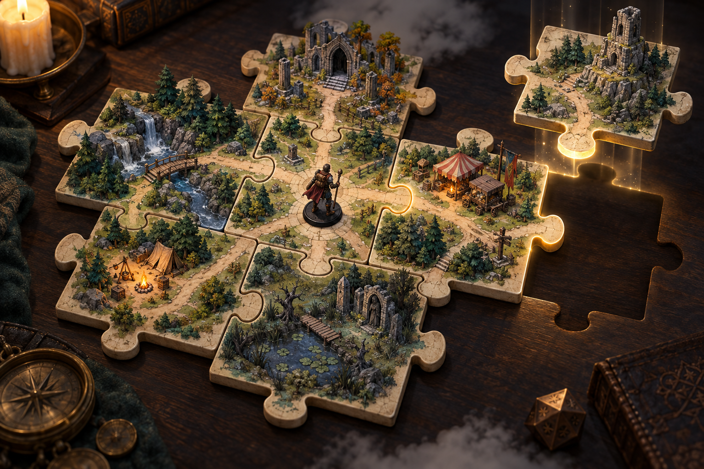
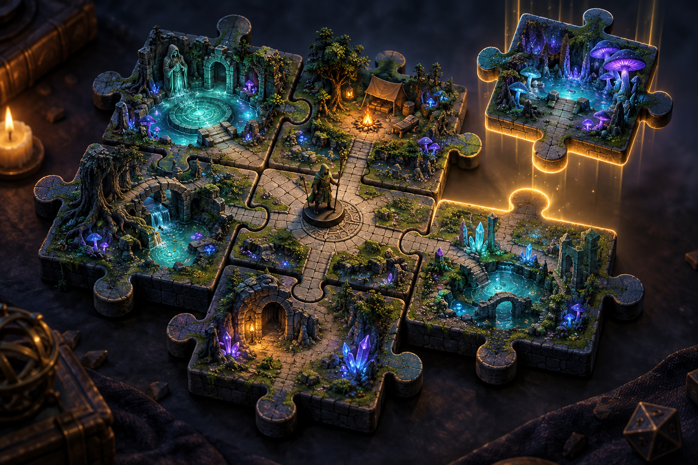
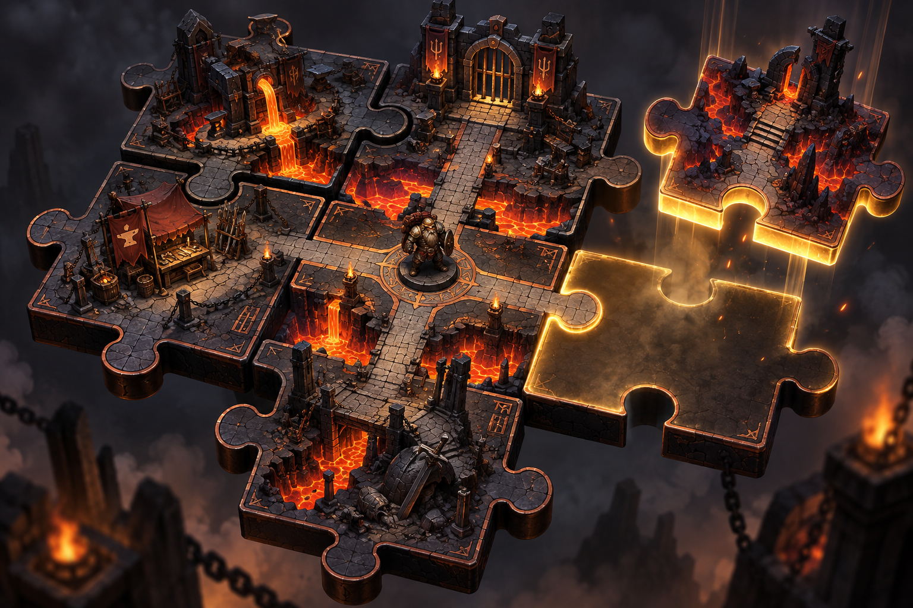
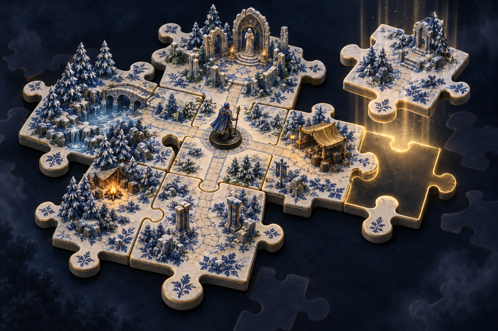

Dice & Destiny — Puzzle Map ConceptsDice & Destiny / Art direction studyA world discovered piece by piece.
Ten explorations of connected jigsaw terrain, tabletop adventurers, and glowing tile arrivals. Click any image for the full 1536 × 1024 concept.

01 · Painted dungeon

02 · Watercolor forest

03 · Carved desert

04 · Blizzard diorama

05 · Gothic reliquary

06 · Bright toybox forest

07 · Living atlas

08 · Luminous undergrowth

09 · Obsidian forge

10 · Painted porcelain